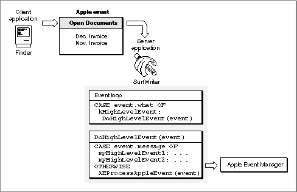
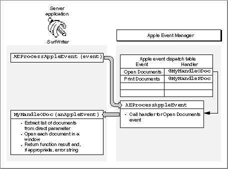

Accepting and Processing Apple Events
To accept or send Apple events (or any other high-level events), you must set the appropriate flags in your application's'SIZE'resource and include code to handle high-level events in your application's main event loop.Two flags in the
'SIZE'resource determine whether an application receives high-level events:An Apple event (like all high-level events) is identified by a message class of
- The
isHighLevelEventAwareflag must be set for your application to receive any high-level events.- The
localAndRemoteHLEventsflag must be set for your application to receive high-level events sent from another computer on the network.kHighLevelEventin thewhatfield of the event record. You test thewhatfield of the event record to determine whether it contains the value represented by thekHighLevelEventconstant; if your application defines any high-level events other than Apple events, you should also test themessagefield of the event record to determine whether the high-level event is something other than an Apple event. If the high-level event is not one that you've defined for your application, assume that it is an Apple event. (You are encouraged to use Apple events instead of defining your own high-level events whenever possible.)After determining that an event is an Apple event, use the
AEProcessAppleEventfunction to let the Apple Event Manager identify the event. Figure 3-10 shows how the SurfWriter application accepts and begins to process an Apple event sent by the Finder.Figure 3-10 Accepting and processing an Open Documents event

The
AEProcessAppleEventfunction first identifies the Apple event by examining the data in the event class and event ID attributes. The function then uses that data to call the Apple event handler that your application provides for that event. The Apple event handler extracts the pertinent data from the Apple event, performs the requested action, and returns a result. For example, if the event has an event class ofkCoreEventClassand an event ID ofkAEOpenDocuments, theAEProcessAppleEventfunction calls your application's handler for the Open Documents event.Before your application attempts to accept or process any Apple events, it must use the
AEInstallEventHandlerfunction to install Apple event handlers. This function installs handlers in an Apple event dispatch table for your application; the Apple Event Manager uses this table to map Apple events to handlers in your application. When your application calls theAEProcessAppleEventfunction to process an Apple event, the Apple Event Manager checks the Apple event dispatch table and, if your application has installed a handler for that Apple event, calls that handler. Figure 3-11 shows how the flow of control passes from your application to the Apple Event Manager and back to your application.Figure 3-11 The Apple Event Manager calling the handler for an Open Documents event
